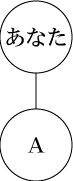
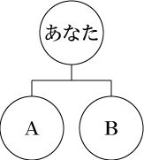
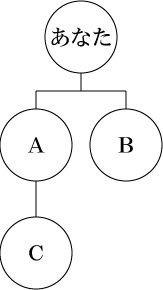
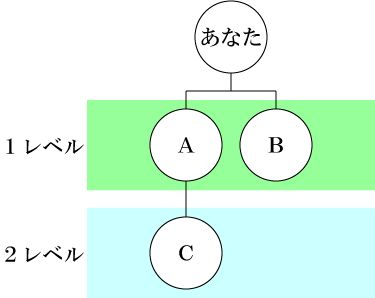
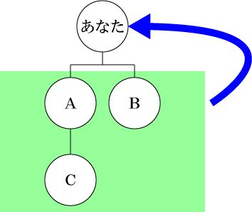
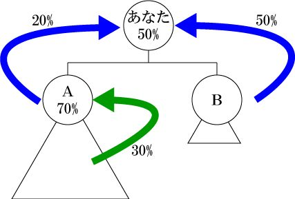
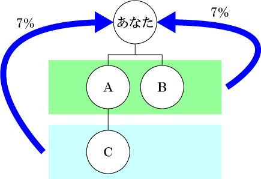
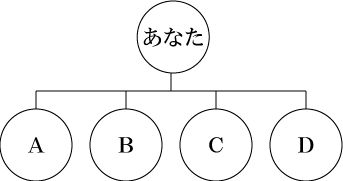
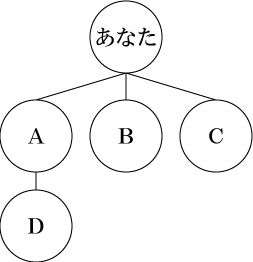
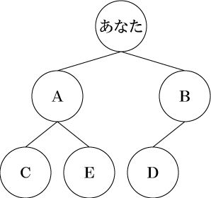

| MLMの裏側: MLMの主宰会社ってこんなだった | |
| ゆたか | |
| (2018) | |
ＭＬＭとは、俗称で、マルチレベルマーケティングと呼ばれる商取引のことであり、日本ではマルチ商法とかネットワークビジネスと言われることが多くある。このＭＬＭは、特定商取引法で定義されている連鎖販売取引のことを主に指す。似たようなもので、「ねずみ講」というものがあり、これは無限連鎖講といい「無限連鎖講の防止に関する法律」で定義されている。
連鎖販売取引と無限連鎖講の違いは、定義されている法律が違う。そして、無限連鎖講は開設、運営、勧誘することを禁止しており、すなわちこの世の中にあってはならないものとして定義されているのである。その点、連鎖販売取引は禁止するまでは至っていない。大きな相違点は、連鎖販売取引は商品の取引がメインなのだが、無限連鎖講は、商品は介在せず金品のみの取引を行い、無限的な連鎖をすることが目的とした取引である。無限連鎖講は簡単に言えば犯罪（違法）なのである。
それならば、連鎖販売取引は合法で安全なものなのかというと、明確にそれを言うことはできない。なぜならば、法律の内容を確認すると、細かく規定がされているからである。やってはいけない事、このようにやらなければならない事というのが事細かに書かれている。これに則っていたら勧誘なんてできないような内容なのである。第一、このように細かく規定しなければならない取引とはなんなのであろうか。果たして合法と言えるのかと疑問すらでてくる内容なのである。
また、無限連鎖講は金品のみの取引が違法なのだから、そこに商品を介在させれば良いのでは？という発想で生まれた、マルチまがい商法などもある。この場合は、商品が粗悪品な場合が多い。ただ、マルチまがい商法は連鎖販売との区別がつけにくく、違法だと判断することが難しいため、日本中に数多く存在している。
では、なぜこのような連鎖販売取引を主宰する会社が存在するのだろうか。日本には数千から五千ほどの連鎖販売取引の会社があると言われている。それだけ魅力のある市場であり、利益がでると考えられる。ここでは、そこを紐解いていきたいと思う。
ＭＬＭの話をする上で知っておいてもらいたいのが、その仕組みである。ＭＬＭと言えば「お金儲け」という印象が強い人も多いことだろう。お金を儲ける仕組みは後のボーナスプランで紹介するので、入会方法や購入方法などの基本的な仕組みをご紹介さえていただく。
ＭＬＭへの入会方法であるが、それは商品もしくはサービスなどを特定負担する必要がある。簡単に言えば、商品を購入する必要がある。ただし、主宰している会社に商品を購入したいと連絡すれば良いかというと、そうではない。商品を購入する前に、紹介が必要なのである。「一見さんお断り！！！」みたいなもので、友人もしくは知人からの紹介があって始めて商品を購入することができる。この「紹介」が問題を大きくする場合があるのだが、それも後で、お話しするとしよう。
紹介してくれる人がいたら、その人と会い、商品の説明や、購入方法やお金の獲方、契約解除やクーリングオフの説明などを受け、会員登録の用紙に必要事項を記入、商品代金を支払い（振込や代引き、クレジットなどの方法がある）、主宰会社へ送ると、書類と入金の確認ができ次第、商品が送られてくるのである。一般的な買い物と少し違うのが、支払が先で、商品が後という流れだということをを注意してもらいたい。あと、紹介してくれる人がいない場合は、会社に問い合わせると誰か近くの人を紹介してくれる。
商品が送られてくると、中には、様々な書類が入っている。それらを確認してくださいとの案内文章まで付いてである。商品が気に入れば、好きな時に追加で購入することもできるし、毎月自動的に銀行などの口座から引き落としされて商品が送られてくるという方法で商品を買うことができるようになる。
そして、その商品が気に入って、誰かに勧めて買ってもらえたら、お金を得ることもできるのである。
ＭＬＭの仕組みは簡単に言えば、商品を購入することで会員となるが、それには必ず紹介してくれる人が必要で、自分も紹介する立場になればお金を得ることもできるのである。
正直な話し、ＭＬＭは一般受けしない。どういったところは受けないかというと、イメージが悪いというところである。友人、知人からの紹介が必要だからそこ、トラブルの元となり、友だちをなくしたり、金のことばかり考えているといわれる。また、マルチを始めたなど様々な世間の厳しい目にさらされやすい。そこを気にせずに行動を起こせる人ならば良いが、なかなかそこまでの動きをできる人は多くない。
イメージが悪いと言ったが、どうしてなのだろうか。それは、紹介が必要な取引だからである。正確に言うと、紹介によってお金を得ることができる仕組みだからである。
多くは、店に買いに行くか、ネットで注文するなど、販売してくれるところがあって、そこに「ほしい」といえば、購入することができる。しかし、ＭＬＭでは、紹介者が必要なのである。ほしい商品があれば特に問題がないのだが、お金を得る為に無理やり商品の説明などしてくる人がいるのである。そこに出くわすと逃げるに逃げれなくなる。なぜなら、その紹介者は友人、知人だからである。そして、付き合いで購入してしまう人が多くいる。また、ＭＬＭの商品は最低１万円以上が相場である。安い買い物でもなく、ちょっと家計にとっては痛い金額である。
このようなトラブルが頻発している業界だから、一般受けしない。それに加え、ねずみ講のような無限連鎖講と同一な組織形態を持つため、混同し、また悪いイメージが付くという悪循環に陥っているのも原因である。ねずみ講とＭＬＭは区別がつけにくいのである。
イメージに限っていえば、新聞や雑誌、テレビ、ネットでは一切良くは言われないのがＭＬＭである。それを肯定するのも否定するのも自分自身の判断だが、良い意味で言われにくいということは理解していただきたい。
イメージが悪いとか、紹介が必要だからいけないと言ったが、実際にどこが問題があるかと言うと、一番は教育なのである。
連鎖販売取引として法律では厳しく記載があるが、その法律に従えばトラブルは起こり難い。ただ問題が起きているのは、その法律であったり、勧誘（紹介する側になり、誰かに紹介すること）の方法を指導しきれていない、もしくは紹介者が理解しきれていないのが問題なのである。
法律では、書類に明記しなければならない内容、勧誘方法、勧誘する際の注意すべきこと、人の嫌がることをしないようにという旨を含んだ内容でできている。故に、ちゃんと理解してその通りにしていれば問題は起こり難いはずなのだ。しかし、その法律に則って勧誘していては、勧誘どころではないというか、勧誘なんて無理ともとれる内容の為、それをすべて守っている人の方が少ないくらいかもしれない。その為、自分独自の勧誘方法を始める、もしくは、稼いでいる人のまねをするようになる。そこから様々なトラブルの火種ができあがってくるのである。
また、会社も稼いでいる人（ＭＬＭ用語では「リーダー」）もどんどん勧誘しろ、勧誘すればこうなるんだぞ、こんな暮らしができるんだぞ、と夢物語ばかり語ってくる。それに乗せられた人は、またトラブルを生む。こうした悪循環の組織体系はＭＬＭなのである。
ただ、悪いことばかりではなく、リーダーと言われる人、そのなかでも最も稼いでいる人をトップリーダーというが、その人たちはかなり収入を得ているのも事実である。また、ＭＬＭの組織だが、新たな人間関係というのも構築されてきて、知り合いなど増えていく場合などもある。
どちらにして、その人の人として在り方を問われるビジネス体系であることは間違いない。
先ほど、述べたようにお金を儲ける仕組みであるボーナスプランの説明をしよう。
プランとは、何かを実現するための詳細な提案、計画、案とあるが、ここで言うプランとはお金が発生する仕組みのことを言う。そしてお金が発生することをボーナス（報酬）という。ここの説明は長く、そして難しいかもしれないがついてきてほしい。
先ずは、組織の話しをする。組織を構築することでお金が入ってくるようになる。その為、組織を知らなければプランの説明の上で重要なポイントなので、図を用いて説明させていただく。
ＭＬＭで組織とは、「あなたが紹介した系列」のことである。例えばあなたがＡさんを紹介した場合は下の図のようになる。

続けて、あなたがＢさんを紹介すると

このようになる訳である。
では、ＡさんがＣさんを紹介したとすると

このように、あなたの紹介した人たちは、あなたのすぐ下に、あなたが紹介したＡさんやＢさんが紹介した場合は、ＣさんのようにＡさんの下に組織が作られていく。

そして、上図のようにあなたが直接紹介した人を「１レベル」といい、その１レベルの人が紹介した人たちを、「２レベル」という。ということは、２レベルの人が紹介者を出した場合は「３レベル」となり、そうすると、４、５，６レベルと段々に深くなっていく。
これは、ＭＬＭで基本となる組織で、「紹介系列」と呼ばれる組織図である。ＭＬＭ業界では、「ユニレベル組織」とか「ユニ組織」などと呼ばれたりする。もし、あなたがＭＬＭに参加するとしたら、この組織図は常に把握するようにすることをおすすめする。
組織はある程度、理解いただけたと思う。これからは、プラン（ボーナスの発生方法）の説明である。
どのようにボーナスが発生するかと言うと、

実は簡単で、あなたの組織の売上からボーナスが発生するのである。上の図で言えば、１レベルのＡさんとＢさん、そして２レベルのＣさんの売上からボーナスが発生する。大概は、組織の売上合計から状況に応じて5%から最大80%くらいの割合でボーナスが発生する。80%も発生させる会社はほぼないのだが、それを売りにしている会社もある。一般的には50%程度までといわれている。
ボーナス額を多くするには、組織人数を増やすか組織の売上を増やすことが重要である。多くの人は、組織人数を増やすことに専念しているようである。
どのように発生するかは簡単なのだが、各社とも独自性を出し、様々は形でボーナスを発生させている。種類としては、ブレイクアウェイ、ユニレベル、マトリックス、バイナリー、ハイブリットなどがある。これらを組み合わせて独自性を出しているのである。次には、これらを説明しよう。
これはＭＬＭで一番最初にできたプランといわれている。老舗といわれる外資系のＭＬＭ会社はこのプランを多く採用している。日本でも、昔からあり、ＭＬＭだけでなく様々な企業で採用している代理店システムと同じ仕組みである。
ブレイクアウェイとは、英語で「BREAKAWAY」と表記し、意味は「離脱する」「脱退する」「逃げる」「分離」「独立」などである。
先ほど「（２）プラン」で説明した通り、あなたの組織売上に応じてボーナスが発生するのですが、売上状況や実績などにより、タイトル（地位）が定められている。そのタイトルに応じて仕入れ値の率が変わってくる。
例えば、一番下のタイトルならば70%で仕入れて販売できる権利を有しているとする。その上のタイトルになると50%で仕入れて販売できる権利を有せるとする。あなたは50%の権利を有しており、あなたの組織には70%の権利を有しているＡさんがいる場合、その差20%をＡさんの売上からボーナスとして得ることができる。ただし、Ａさんがその後50%の権利を有したとすると、あなたは同率の為、Ａさんの組織から収入を得られなくなる。これがブレイクアウェイである。あなたとＡさんが同率なので、その組織から独立して新たな組織となってしまう場合もある。そうならない為に、あなたはタイトルを上げていく必要がある。

このブレイクアウェイのメリットは、あなたが頑張れば組織を独立させ多くの収入を得るようにすることができることである。デメリットは組織内に同率のタイトル者が出現した場合、組織からいなくなってしまうこと。
ここまで理解できた方はこう思うかもしれない。「では、組織内に同率のタイトル者を出さなければ良いのでは？」しかし、タイトル者を多くださなければ、収入が安定してこないのがブレイクアウェイの特徴なのです。ブレイクアウェイを採用する会社は同時にステアステップというボーナスを採用することが多い。これは、同率のタイトル者が出現した場合には、そのタイトル者の組織売上の数％ を得ることができるようになるボーナスである。それにより、多くのブレイクアウェイ者を出すことで安定した収入を増やすことができるようになる。
ブレイクアウェイでは、組織を大きくすることをやめてはいけない。多くのブレイクアウェイ者を出し、その中からもブレイクアウェイ者を出すように指導していかなければならない。
ブレイクアウェイの場合は仕入れてから販売することで利益を得るのが基本のボーナスだったが、ユニレベルはあなたの組織売上から決められた割合でボーナスが発生する。
例えば、下図のように１レベルから７％ 、２レベルから７％ というように発生する。

これが無制限に発生する訳ではなく、多くの会社では、７レベルまでと決めていることが多い。
７レベルまでと決めるということは、会社が儲けているのではないかという思う方もいるかもしれないが、無限にしてしまうと、無限連鎖講（ねずみ講）となり違反になってしまう。その為、制限を設ける必要がある。ただ単に、儲けるだけではないことも知っておいてもらいたい。
ユニレベルは紹介を出すことができれば一人からでも収入を得ることができたりと、比較的簡単なプランなのだが、ボーナスを大きくしていくのには時間がかかる。ただし、着実に組織を構築していけば、安定した収入が得られるのが特徴である。
ブレイクアウェイは、組織人数は500人とか1,000人とかになると多額のボーナスを得ることができるが、ユニレベルでは同じ組織人数であっても、ブレイクアウェイ程には収入を得られない。しかし、ブレイクアウェイは多額のボーナスを得られるのはごくわずかな人数だが、ユニレベルでは多くの人がそれなりの収入を得ることができる特徴をもっている。その為、ユニレベルは初心者向けともいわれいる。
映画で聞いたことあるような名前だが、マトリックスとは「行列」という意味で、あなたが直に持てる紹介者（紹介者の系列）を限定するということである。
解り難いと思うが是非ついてきてもらいたい。
例えば、あなたがＡさん、Ｂさん、Ｃさん、Ｄさんの４人を紹介したとする。そうするとユニレベル組織では、下図のようになる。

これが、３系マトリックス（直紹介系列を３つに限定する）とすると、

このように、「あなた」から３本の足が出て、Ａさん、Ｂさん、Ｃさんがつく。そして、Ｄさんは「直紹介系列を３つに限定する」の条件により、これ以上「あなた」の下にはつけれないので、Ａさんの下につくことになる。これが３系マトリックである。これを４系のマトリックスや５系マトリックスとするときも同様の考え方なのである。
このプランのメリットは、ＡさんはＤさんを紹介した訳ではないのに、自分の組織に入ってくるということである。これをスピルオーバーという。このスピルオーバーこそが特徴で、Ａさんはこの「あなた」の紹介したＤさんの売上からもボーナスを受け取ることができる。つまり、あなたが頑張って組織を一生懸命につくらなくとも上位の紹介者から誰かあなたの組織へと落っこちてくることがあるということである。人によっては、一人も紹介していなくとも上から落っこちてきてあなたの組織が大きくなっていたということもありえる。簡単に言えば「棚から牡丹餅」的なことがおこるのである。
このプランの特徴である「棚から牡丹餅」的な組織はメリットでもありデメリットともなる。なぜなら、上から落っこちてボーナスが多くなることはメリットだが、それを待つだけで何もしない、紹介者を出さない組織ができてしまう。それでは組織は一向に大きくならず収入も増えないという現象が起こり得る。
ただし、ユニレベルと同様に初心者向けのプランとはいえる。
バイナリーとは「（５）マトリックス」で２系マトリックス（直紹介系列を２つに限定する）に絞ったプランのことである。
あなたがＡさん、Ｂさん、Ｃさん、Ｄさん、Ｅさんの５人を直紹介していた場合、バイナリーにあてはめると下図のようになる。

「なんということでしょう！Ａさんの組織には２人、Ｂさんにも１人がいるではありませんか！！」
ということになる。これがバイナリーの特徴である。今は、最も人気のあるプランといってはいいのではないか。
ただし、バイナリーにも弱点があり、２系の左右の伸び方が異なってくることにある。勢いのある方はどんどん伸び、勢いのないもう片方はそれなりにという訳である。これを「片伸び」という。これを対処するには、やはりあなたが力のある人を見つけ出し、伸びていない方にその人をつけることが必要になってくる。そうなると、最大のメリットである「棚から牡丹餅」が薄れるというデメリットがでてくる。
このバイナリーもユニレベルやマトリックスと同様に初心者向けではあるが、巨大な組織を作る上での難しさは上級者向けである。
ん？車か？というようなキーワードが出てきた。それは「ハイブリット」。車であれば、電気とガソリンの両方で走るハイブリッド車が有名だが、ＭＬＭにおいてもプランのハイブリッドが人気である。
これは、ブレイクアウェイの大きなボーナスを得られる特徴、ユニレベルやマトリックスの容易さ、バイナリーの特徴を組み合わせてしまおうというプランである。それにより、デメリットを補うことができるのである。バイナリーとユニレベルを組み合わせたプランが多いようである。
ハイブリットの最大のデメリットは何というと、「プランがわかりにくい！！！」これである。いくつかのプランの複合で出来上がる為、複雑になり、説明どころか理解すら難しいということが起こる。理解できなければ、どのように紹介者を出していけば良いかわからなくなってしまう。これを理解できるようなるまであなたの勉強と努力が必要になってくるであろう。ただし、ＭＬＭに参加するのであればハイブリットはおすすめする。
今まで説明してきたように様々なプランが存在するが、これはあなたが頑張れば多くのボーナスとなって返ってくる。その為には組織人数を多くする必要がある。その人数を多くする為に、「儲かる」「すぐ元になる」などと安易な表現で勧誘しがちだが、実際にそれで勧誘できたとしてもボーナスを得られる人数はごくわずかである。それでもＭＬＭに参加する人は多くいる。
ここでは、プランが良いとか悪いとかでの話ではなく、主宰会社はどのような想いでプランを作成しているか話しておこう。実際に関わったものしか知らないところである。
先ず、プランを作る上で何を重要視するか？それは、「人がどうであれば紹介しやすいか？」である。この一点につきる。
主宰会社はどうであれば紹介しやすいかを検討する。そこでよく使われるプランが、「バイナリー」である。そう「棚から牡丹餅」的な表現ができるプランで目の前に人参をぶら下げようということである。これが、結構みんなの心をつかむことができる。以外とＭＬＭを数多くやってきた人ほどこれにはまる。なので、新たな会社はほとんどこのバイナリーを採用する。
ただし、バイナリーだけでは「片伸び」の対処をしきれないので、ユニレベルもくっつけてハイブリットにするのである。「ハイブリット」というと今どき風で響きが良いのもまたうけたりする。なぜなら、ＭＬＭに参加する人は５０歳代以上がほとんどをしめるからである。そして、６０代以上は聞いたことがある横文字に弱い。これでメインプランの感性である。
あとは、バイナリーではどの位ボーナスを出して、ユニレベルではどの位だすのかを決める。大概はバイナリーで多く出し、ユニレベルでは最低限度にするところが多い。なぜならバイナリーを多くすると、「棚から牡丹餅」の収入が多く入りそうな気にさせることができるからだ。
バイナリーでボーナスを発生させるには、良くこういった条件を付ける。
「左右そろっていれば」
これが重要なキーワード。
どういうことかと言うと、下図をみてほしい。
あなたからみて、Ａさん側（左側）の人数は３人、Ｂさん側（右側）は２人いる。そうなるとボーナスは右側に合わせてボーナスが発生し、２人分からでる。ということは、左側の１人分からはボーナスが発生しないのだ。「たった一人くらいいいじゃん」と思うかもしれないが、もし左が１０００人、右が５０人だったとしよう。そうなるとボーナスは、「なんと！ なんと！ なんと！ ５０人分からでーす」となる。つまり残り９５０人分からはボーナスが受け取れないのである。ではこれはどこに行くかというと、会社に残るわけである。なのでそれを見越して、ボーナス額を多く見せることもできる（実際にそうしている会社がほとんど）。「内の会社はボーナス還元率８０％ ですよ」とうたっていても、実際には３０％ くらいなんてざらなのだ。
なんと、みんなにとっても会社にとっても良いプランがバイナリーだったのである。
ただし、この片伸びをしなかった場合どうなるかというと、全員からボーナスを発生させてしまうため、会社はつぶれてしまう。そこで、主宰会社はキャップ調整をする。キャップ調整とは、「ボーナスの上限を設定します」ということである。これで会社からのボーナスはきだしを抑え、無理なくボーナスを払えるようにするのである。
ユニレベルはボーナスを最低限度にするといったが、これは会社からするとボーナスの吐き出しを抑えづらいプランだからである。設定した割合がほとんど出て行ってしまう。それも組織が大きくなればなるほど会社にとってつらくなる。そこで最低限度に抑えておくのが会社にとってはベストである。このボーナスで抑えておいても、バイナリーで吐き出しを大きくみせることができるため、問題は少ないのである。このユニレベルは、プランに詳しい人や、バイナリーで片伸びの経験のある人は喜ぶプランでもある。
加えて、よくタイトルというものを作る。これは人のやる気、モチベーションを上げる為につくられている。やはり目標がないと人は動かなくなる。ましてやハイブリットはわかりずらいため、それだけでは続けられない。その為、タイトルを設定し、「このタイトルになればこのくらいボーナスが出ます、これ以上のタイトルだとこれくらいです」モチベーションを上げてあげるのである。そんな馬鹿なことに引っかかるかと思う方もいるかもしれないが、結構これを目標にする人は多い。侮ってはいけない。
これでプランの完成である。みんなに簡単に収入になるように見せれて、主宰会社はもうかり、モチベーションを上げさせることができた。万々歳である。
プランの説明を聞いて、会社は儲かるんだなと思ったかもしれない。確かに儲かる。ただ、それはどの会社でも同じで、儲からないで会社を興す人などいないのである。利益を求めない人が企業などしない。だから会社は儲けて当然なのである。
ただ、儲かると言っても、ＭＬＭを採用している会社にもかなりの苦労がある。それは、人が入ってこなければ、儲けられない。ましてやＭＬＭという悪いイメージを持っている人がほとんどの世の中で、人を集めるということ並大抵のことではない。ここが一番苦しいところなのだ。
通常の会社であれば、良い商品をつくり、宣伝にお金をかければ売れるが、ＭＬＭでは良い商品を作っても宣伝は口コミのみのため、時間もかかる。では、ＭＬＭの主宰会社はどうしているかというと・・・
多くの組織をもっている人たち、いわゆる、「ネットワーカー」という人たちをお金を出して連れて来るのである。この人たちは、様々なＭＬＭ会社を経験し、多くの組織を構築し、収入を得た人たちである。そういった人に良い条件を提示し、内の会社で組織を作ってもらうのだ。作るというより、もともとある組織を移動させていると言ったほうがはやい。そうやって渡り鳥のようにさまざまな会社を渡り歩いているのが現状である。
全部の会社がこのような事をしている訳ではないが、利益を上げる為にはある程度仕方のないところもある。
組織ができてしまえば、会社の利益は大きくなり安定してくる。あとは、組織の教育をしっかりとし、他社に人が流れていかないようにしていくのである。その為に、旅行ご招待や派手なパーティを行ったりする。
ここでは主催会社のメリットとなっていたが、ＭＬＭの裏側を話してしまったようである。
ＭＬＭの会社では、儲けようと思えばいくらでもできる。プランを複雑化して吐き出しを抑えたり、ボーナスの振込手数料を引いてボーナスを支払うなんてこともする。通常の会社であれば手数料を引いて払うなどないのにである。悪徳になると一律手数料1,000円という会社もある。
また、ボーナスも売り上げからボーナスを出すのではなく、ポイントを使ったりする。例えば10,000円の商品だとしても、ボーナスの対象ポイントを設定し、8,000ポイントですよ、などとする。そうすると、その8,000ポイントからボーナスを支払うのである。単純にその2,000円は会社の利益とすることができる。
このように、利益を出す工夫は無限にある。プランに詳しくなればもっとメリットがでてくるのがＭＬＭなのである。
ここまでＭＬＭについて、いろいろ書いてきたが、あなたが本気でやれば莫大な収入をえることができるのもＭＬＭだし、世間の評判が悪いのもＭＬＭである。それを理解して参加するかしないかは自分で判断してほしい。参加したならば全力でやる。文句を言うならば参加しない。そういった事を見極められるように、これを参考にしてもらえればと思い、書いた。是非、活用してもらいたい。
また、プランで迷った場合は、月に1,000万円以上得たいというのであれば、ブレイクアウェイが中心のハイブリットプランをおすすめする。月に100～200万円くらい得たいというならばバイナリーが入ったハイブリットプランをおすすめする。あなたの目標に合わせて頑張ってもらいたい。
加えて、無理やり勧誘させられたなどの困ったときは、クーリングオフは２０日以内ならできるし、それを過ぎていても、概要書面や契約に関する書面を必ず説明、配布しなければならいため、手元にあるはずなのでそれを読み、中途解約について確認すると良い。それが理解しにくい場合は、消費者センターなどでアドバイスをくれるので行ってみてくれ。
ＭＬＭで収入を得たい人は手助けし合える仲間を作り、困ったらあなたを紹介してくれた人やその上の人たち、また会社などにも遠慮なく相談することをおすすめする。ＭＬＭの良さは紹介してくれた人も手助けしてくれるということである。あなた一人でやるものではないので、是非とも活用してもらいたい。
全てはあなた次第である。